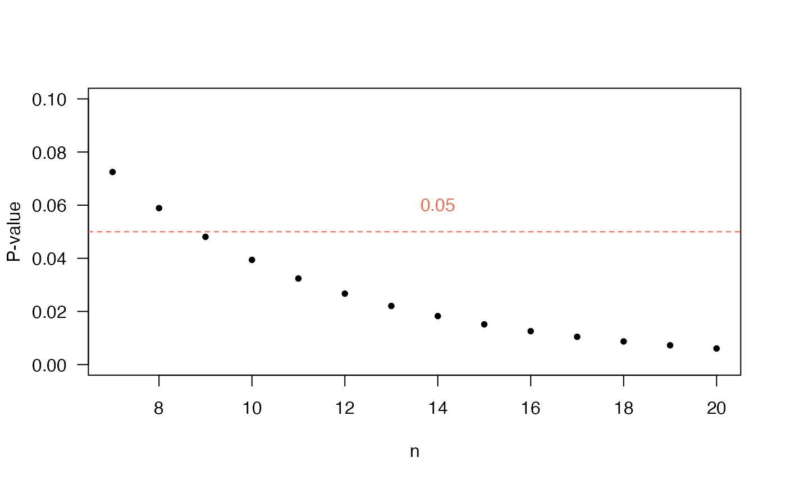

P-value for example 1 of Demidenko (2016)
In this section we will replicate the example 1 of Demidenko (2016)
using the function t_test of the package ‘stests’ as shown
below.
require(stests)
t_test(meanx=249, varx=20^2, nx=10000,
meany=250, vary=20^2, ny=10000,
alternative='less', mu=0, var.equal=TRUE)
##
## Two Sample t-test
##
## data: meanx = 249 , nx = 10000 , meany = 250 and ny = 10000
## t = -3.5355, df = 19998, p-value = 0.0002039
## alternative hypothesis: true difference in means is less than 0
## 95 percent confidence interval:
## -Inf -0.5347436
## sample estimates:
## mean of x mean of y
## 249 250The results obtained by the function t_test are the same
obtained by Demidenko
How does the sample size \(n\) of each group influence the P-value?
In the following figure the P-value is calculated for many values of \(n\), in which it is evident that the P-value decreases and then in \(n=2000\), this parameter is below the level of usual significance of 5%

P-value for example 2 of Demidenko (2016)
In this section we will replicate the example 2 of Demidenko (2016)
using the function t_test of the package ‘stests’ as shown
below.
t_test(meanx=15, varx=6^2, nx=7,
meany=10, vary=6^2, ny=7,
alternative='greater', mu=0, var.equal=TRUE)
##
## Two Sample t-test
##
## data: meanx = 15 , nx = 7 , meany = 10 and ny = 7
## t = 1.559, df = 12, p-value = 0.07248
## alternative hypothesis: true difference in means is greater than 0
## 95 percent confidence interval:
## -0.7160366 Inf
## sample estimates:
## mean of x mean of y
## 15 10We see that the statistics coincide with what is obtained in the
article, the value of P within the function t_test is
calculated with a \(t\)-student
distribution whereas in the article it is obtained through the normal
distribution, on the other hand, the size of the sample is small (\(n=6\)) because of this is the difference
between the methods.
How does the sample size of each group influence the P-value?
In the following figure the P-value is calculated for many values of \(n\), in which it is evident that the P-value decreases and then in \(n=9\), this parameter is below the level of usual significance of 5%.

Function to calculate the D-value
Hypothesis testing:
- The null hypothesis is :
\[H_0: \mu_1 = \mu_2\]
-
The alternative hypothesis can be:
\[H_A: \mu_1 < \mu_2\]
\[H_A: \mu_1 \neq \mu_2\]
\[H_A: \mu_1 > \mu_2\]
The function d_meantest presented below is to calculate
the D-value by simulation for the case of comparison of two means from
normal populations.
D-value for example 1 of Demidenko (2016)
We will replicate the example 1 of Demidenko (2016) using the
function d_meantest.
d_meantest(meanx=250,meany=249, varx=20^2, vary=20^2, alternative='less')
##
## Two Sample d.test
##
## data: The D-value was calculated using nrep= 1e+06
## d.value = 0.48563
## alternative hypothesis: less
## sample estimates:
## mean of x mean of y
## 250 249D-value for the example 2 of Demidenko (2016)
We will replicate the example 2 of Demidenko (2016) using the
function d_meantest.
d_meantest(meanx=10, meany=15, varx =6^2, vary=6^2, alternative='less')
##
## Two Sample d.test
##
## data: The D-value was calculated using nrep= 1e+06
## d.value = 0.72189
## alternative hypothesis: less
## sample estimates:
## mean of x mean of y
## 10 15How to change the D-value for the different values of \(\bar{x}\) y \(\bar{y}\)?
To answer this question we will take the data from example 1 of Demidenko (2016), the value of \(x = 249\) will be fixed while the value of \(\bar{y}\) will be moving away from \(\bar{x}\). Recall that the value of \(\bar{y}\) represents the average weight of patients who consumed the drug to lose weight. The value of the sample desviation \(s\) for each group will remain constant at 20 lbs.
The following figure shows the evolution of the D-value as the weight changes \(\bar{y}\) for the group of people who did take the medication.